FOR WINDOWS 10 AND 11 · FREE AND OPEN SOURCE
A hardware clock that floats on your Windows desktop.
Clock, stopwatch, countdown timer and a world market board, drawn as dot-matrix or seven-segment LEDs or in plain type. Transparent, always on top, out of your way.
Portable exe, checksums and release notes
Not code-signed: Windows SmartScreen may ask once. How to run it
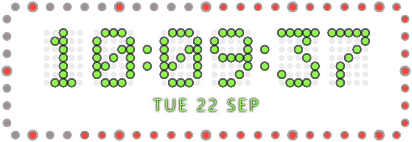
Four modes, one small window
Switch from the right-click menu, or with Ctrl+Alt+Shift+1–4 from any window.
-
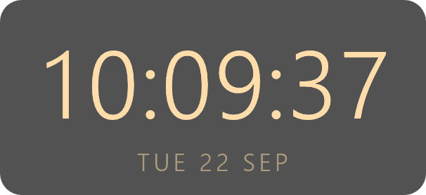
Typeface · Warm · backdrop
Clock
Time and date, 24 or 12 hours, seconds on or off. Add a second time zone after the date.
-
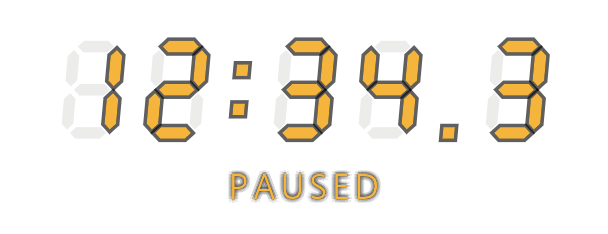
Seven-segment · Amber
Stopwatch
Start, pause and reset with a hotkey. A running stopwatch carries on after a restart or a reboot.
-
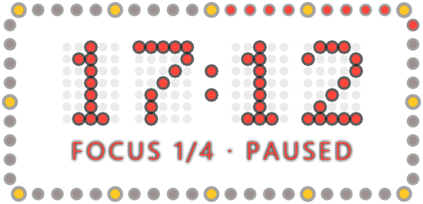
Dot matrix · Red · seconds ring
Timer
Count down from 1 to 1440 minutes; scroll over a stopped timer to change it. Turn on Pomodoro for four focus periods with short and long breaks.
-
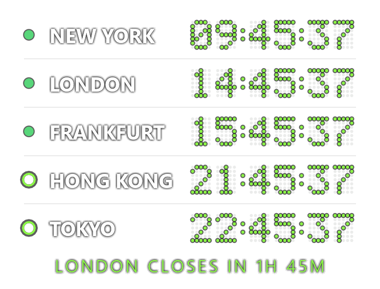
Typeface · Cool · city names
Markets
Which stock exchanges are trading, on lunch break or closed, with a countdown such as “London closes in 1h 45m”. Worked out on your PC: no network, no account.
Or as a single line, with city names or exchange codes.
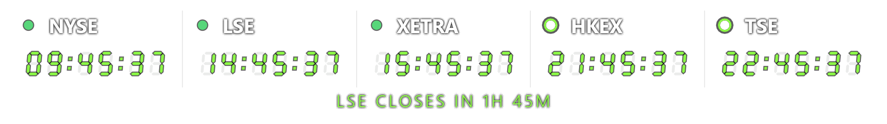
Nine exchanges from New York to Sydney, with daylight saving time handled per region. Public holidays and half days are not included.
Pick a face and a colour
3 faces × 8 colours, with or without the seconds ring and the backdrop, in any combination. Every picture here is rendered by ChronoDesk itself, off screen, at a pinned time.
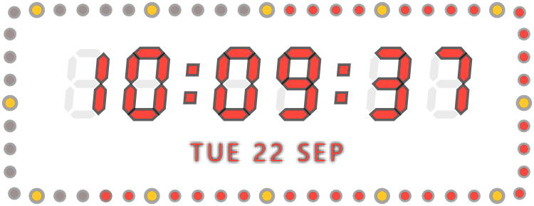
More looks
-
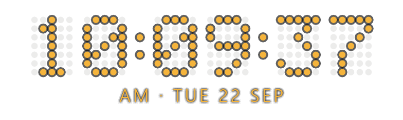
12-hour clock, with AM or PM before the date.
-
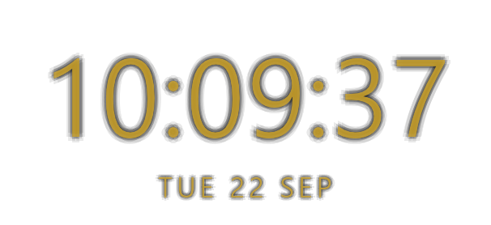
Night dimming at the default 70 %, always or on a schedule.
-
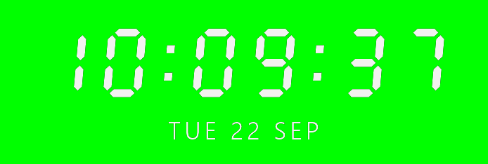
Chroma key: pure
#00FF00behind it, for OBS to key out. -
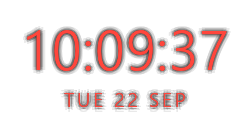
Small, for a corner of the screen; Medium and Large too.
Made to sit on your desktop all day
-
OUT OF THE WAY
Lock it from the tray icon and clicks pass straight through to the windows below. A dark halo keeps white digits readable on a white page, and night mode dims it on a schedule, never below 60 %.
-
HOTKEYS FROM ANY WINDOW
Global hotkeys, also while locked Keys Action Ctrl+Alt+Shift+Space Start or pause the stopwatch or timer Ctrl+Alt+Shift+R Reset Ctrl+Alt+Shift+1 2 3 4 Clock, stopwatch, timer, markets Ctrl+Alt+Shift+L Lock or unlock (click-through) A key combination another program already uses is skipped, not fought over. Switch them off under Global hotkeys.
-
READY FOR STREAMING
Chroma-key mode puts it on pure
#00FF00for OBS and other streaming software. Green colours are drawn in white there, so the keyer keeps them. -
SURVIVES A REBOOT
A running stopwatch or timer picks up where it was after a restart. A one-shot alarm sounds three times and blinks the frame, and won't ring late after the PC has been asleep.
-
LIGHT
One ~5.8 MB exe with no image or font files. About 50 MB of RAM. One frame per second when idle; a paused stopwatch draws none. Written in Rust, drawn with egui on OpenGL.
-
PRIVATE
No telemetry, no account. Once a day it asks GitHub whether there is a new release, sending nothing but its name and version;
check_updates: falsein the settings file turns that off. Updates are signature-checked before they install, and nothing downloads until you click.
Install
Windows 10 or 11. No admin rights needed.
Setup ChronoDesk-Setup.exe
Installs for your user only, in %LOCALAPPDATA%\ChronoDesk. Adds a Start menu shortcut and an Installed apps entry, then starts the clock. New versions arrive as a one-click item in the menu.
Portable ChronoDesk.exe
The same program; run it from anywhere and nothing is installed. It still keeps its settings in %APPDATA%\chronodesk, and its update item opens the release page.
SMARTSCREEN
The exe isn't code-signed, so Windows SmartScreen may warn the first time. Choose More info → Run anyway. Checksums are in SHA256SUMS.txt, and in-app updates are signed and verified before they install.
Check the download in PowerShell
Get-FileHash .\ChronoDesk-Setup.exe -Algorithm SHA256
Compare the result with the line for the same file in SHA256SUMS.txt.
Uninstall
Settings → Apps → Installed apps, or run chronodesk.exe --uninstall. Your settings in %APPDATA%\chronodesk stay in place.
Build from source
Rust 1.95 or newer: cargo run --release — Building notes in the README